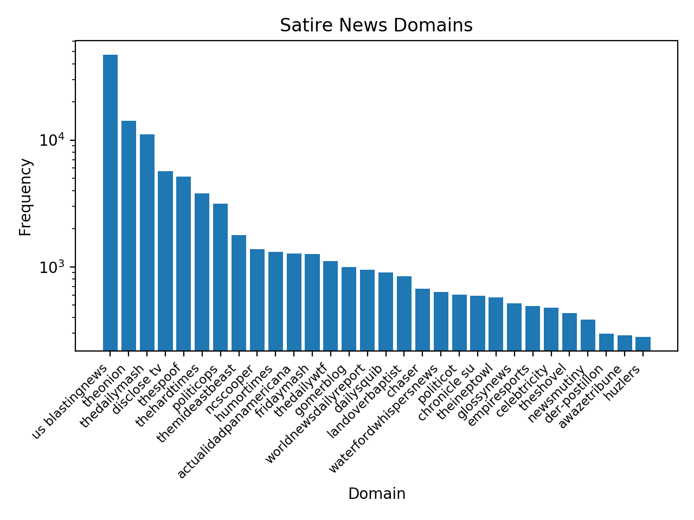
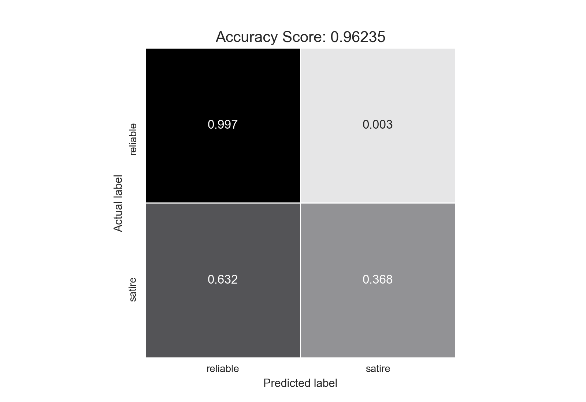

Detecting Satire in News Headlines
Using logistic regression to classify news headlines from various sources as satire or reliable.
While humans are fairly adept at recognizing sarcasm from seriousness, the prevalence of fake news and outlandish headlines have been making it much harder to determine what is real in the media. In this article we will attempt to create a logistic regression classifier to differentiate between real and satire news headlines. We can then use this classifier to see whether other types of unreliable or fake news have headlines similar to credible news or satire.
I decided to use the open source dataset Fake News Corpus github repo available here to provide the satire and credible news headlines. The dataset itself consists of over 5 million articles classifiedThe original source used http://www.opensources.co/ to classify each domain, but this site has since closed down. into different types such as credible, satire, fake news, and so on. It is important to note that the data is classified into each type based off the domain of the article rather than the content article itself. In order to make this data easier to work with, I cleaned the raw csv to eliminate unnecessary columns, non-ascii characters, and rows with types that did not fall into the categories outlined by the original corpus.
To get a better idea of where our news is coming from, let's explore the domains under the credible and the satire types. In the original dataset, the domain names were expressed as the news site they were scraped from, and thus included url extensions. To standardize the domain names, I eliminated punctuation and stop wordsThe complete list of stopwords used: ["com", "www", "org", "co", "uk", "aus", "domain", "columns", "rows", "au", "af", "ca", "go", "de", "in", "nz", "m", "net"]. After doing this, we can create a word cloud to reflect the domains classified as reliable news and satire news and their relative frequenciesThe distribution of these sites is very skewed, with the most common sites appearing exponentially more often than the others. To get a wrod cloud with more variety I took the log of the frequency of each domain..

Fig. 1 Word cloud demonstrating the domains of the satire news (right) and reliable news (left).
So, let's create a classifier to determine whether an article is reliable or satirical. I used the SciKitLearn Count Vectorizerdocumentation found here to create a bag of words model for our data. I also split the data into test and training sets stratified by domain. By doing this, we retain the proportions of each domain represented in the test and training datasets. Finally, I constructed a logistic regression modelbuilt with SciKit Learn, documentation found here To visualize the accuracy of the model I created a confusion matrix:

Fig. 2 Confusion matrix of the entire dataset. 1 corresponds to satire news while 0 corresponds to real news.
Looking at this, we see a fairly high accuracy rate. while this is promising, looking a bit closer we see that the satire data has a very high false negative rate. This is becuase the satire data is being clobbered by the real news data. In fact, if we were to classify all headlines as credible news, we would see an accuracy of .95! This is not quite what we wanted, since we are trying to classify articles based off of their headline text content rather than pure probability. So, in order to better understand the problem let's examine a Receiver Operating Characteristic Curve (ROC Curve). We can visualize the accuracy of our model with this ROC curve:

Fig.3 ROC curve demonstrating the low true positive rate implicit in our data.
The area under the ROC curve is very large, indicating our model is very accurate. However, as we noticed this is because we tend to have a lot of false negatives classifying satire news as real news. If we were to actually implement this in order to discern real and satire news articles this would be problematic, so lets try and shift along the ROC curve to an area with lower false negative rates. This will create a model that will be more effective at classifying both satire and reliable news in general, rather than when we have significantly more real news than satire. We will need to sacrifice some accuracy and true positive rates to change this. So, I attemped to create a new reliable news dataset using a stratified sample from our total data by domain. I sampled the data to have equal amounts of real and satire news. Then we can create a new logistic regression model that wil hopefully be more effective at classifying satire news headlines. We get a confusion matrix as such:

Fig.4 Confusion matrix for a smaller real news population. 1 corresponds to satire, 0 corresponds to reliable news.
While this is significantly less accurate than the one above, we do see a better false negative rate. Now, we will use this on some of the other types and see which ones get classified as satire versus real news.